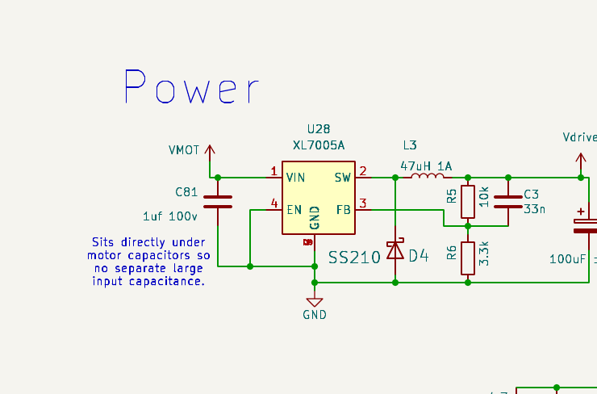
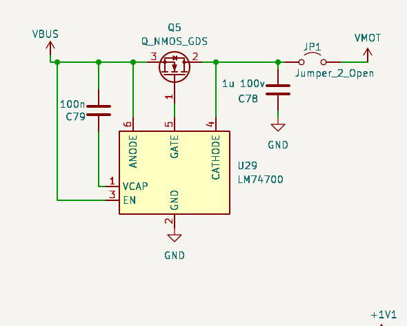

Power Supply Review
VMOT → XL7005A buck → 5 V "Vdrive" → SPX3819 → 3.3 V → RP2350 VREG · USB-PD input via LM74700 · 2026-08-08
1 · Architecture & what checks out
Two power entries: the battery bus (VMOT, XT30 pass-through, 3×100 µF/100 V bulk + 100 V ceramics + SMDJ64A TVS) and USB-C (FUSB302 PD sink negotiation, VBUS → LM74700+Q5 ideal diode → VMOT). One buck makes 5 V, one LDO makes 3.3 V, the RP2350's internal switcher makes its own 1.1 V core, and U17 picks 3.3 V/5 V for the encoder supply. The isolated CAN side is bus-powered from the CAN harness. Per the design intent, everything in the power path is 80 V silicon with TVS breakdown (71–79 V) just below it, so surges hit the TVS before any FET avalanches.
- OK Buck feedback math: R5/R6 = 10k/3.3k on the XL7005A's 1.25 V reference → Vdrive = 5.04 V, with C3 33 n feed-forward. ✓
- OK Freewheel: D4 SS210 (100 V, 2 A) — right rating for an 80 V-max input rail. ✓
- OK Input capacitance: C81 1 µF local, with the sheet note that the buck sits under the motor bulk caps — that adjacency is real on the layout, so no extra bulk needed. ✓
- OK RP2350 core supply: 3.3 µH + 4.7 µF on the internal VREG, 33 Ω + 4.7 µF filter on VREG_AVDD — textbook hardware-design-guide. ✓
- OK PD-side ratings: VBUS caps 50 V for 20 V PD, USBLC6 on data, CC caps per FUSB302 app note. ✓


2 · Findings
HIGH The USB backfeed blocker is 65 V silicon on an 80 V-philosophy bus
LM74700's absolute maximum on ANODE/CATHODE is 65 V, and its CATHODE pin sits directly on VMOT (through bridged JP1). At 48 V nominal that's fine; at a 60 V bus there is 5 V of margin against a rail that regen events actively pump upward, on a board whose other protection is sized to let the bus ride to 71 V+ before the TVS conducts. The failure chain is the bad part: if the LM74700 dies with Q5's gate enhanced, the motor bus connects to your laptop's USB port.
Options, cheapest first: (a) replace LM74700+Q5 with a single SS210 Schottky (100 V, already in the BOM) — you lose ~0.4 V on the USB-power path only, which the buck doesn't care about, and the blocking junction is then rated like everything else on the bus; (b) keep the ideal diode but move it behind its own clamp (65 V-safe node); (c) a back-to-back-FET ideal diode controller rated 80 V+. I'd take (a) — bench convenience doesn't justify a 65 V part as the only thing between a 60 V bus and a USB host.
MED Regen has nowhere to go — and the 4th half-bridge could fix that
Headroom between 60 V operating and the ~71 V TVS breakdown stores only ½·310 µF·(71²−60²) ≈ 0.22 J in the bulk caps. Any real deceleration dumps far more than that, and both the reset-brake behavior (all low-sides on) and E-stop-to-RUN make hard braking events likely. Two mitigations that cost nothing on this board: firmware bus-voltage guard using the existing VMOT sense on ADC6 (fold back braking above ~66 V), and — the elegant one — use the spare D half-bridge as a brake chopper: a power resistor from the D phase output to GND, PWM'd by the already-routed D bridge when the bus rises. That turns the "4th half-bridge" feature into overvoltage protection for free.
MED Vdrive budget is tight against the XL7005A's 0.4 A rating
| Vdrive load | Typical | Worst case |
|---|---|---|
| 3.3 V rail via LDO (MCU ~80 mA, 4× SIT3088 with 2 drivers into 50–100 Ω ~60 mA, INA240s, FUSB302, flash) | ~150 mA | ~250 mA |
| Encoder supply V_ENC (breakout: MT6701 + 3 transceivers, one driving) | ~50 mA | ~120 mA (5 V third-party encoder) |
| WS2812 (via D30 on rev B) | ~15 mA | 60 mA |
| 4× EG3113 gate drive @ 25 kHz (8 × ~38 nC) | ~10 mA | ~25 mA (50 kHz) |
| Total | ~0.23 A | ~0.45 A |
Typical use fits; a 5 V hungry encoder plus heavy transceiver traffic doesn't. The clean fix is XL7015 (same family/footprint, 0.8 A) at the next order. Related: at 60 V→5 V/150 kHz the 47 µH inductor ripples ≈ 0.65 A peak-to-peak, so peak inductor current at 0.4 A load is ~0.7 A against a 1 A-saturation part — functional, but 100–220 µH would cut ripple 2–5× and stop flirting with saturation at current-limit.
MED SPX3819 in SOT-23-5 runs hot when the transceivers work
(5.04 V − 3.3 V) × 210 mA ≈ 0.37 W across θJA ≈ 230 °C/W ≈ +85 °C junction rise — fine on a bench at 25 °C, at the 125 °C limit in a 40 °C enclosure bolted to a warm motor. Same-function LDOs in SOT-89/SOT-223 (or AP7361C-class) drop θJA ~3×. Worth a footprint change at the next spin; no action needed for bench work.
LOW Smaller items
- V_ENC pin is bare: J12 pin 4 has no local capacitance, no ESD clamp, and no current limit — the TS5A3159 (U17, ~300 mA max) is the only thing between a shorted encoder cable and the 3.3 V/5 V rails. Rev C: 1 µF + a 5 V TVS at the pin and a polyfuse (or a current-limited switch instead of U17).
- Hot-plug inrush: 60 V into ~310 µF through an XT30 makes a real spark and erodes contacts. Anti-spark connector on the harness side, or a precharge note in the docs.
- XL7005A EN is tied to GND — active-low enable on XLSEMI parts, consistent with boards that boot, but worth one datasheet check; also means Vdrive can never be sequenced/disabled.
- Battery reverse polarity: nothing blocks it (XT30 keying is the protection). Standard for hobby drives — worth one README sentence.
- USB-only operation: 5 V VBUS → ideal diode → buck at ~max duty leaves Vdrive ≈ 4.3–4.6 V. 3.3 V is unaffected; 5 V encoders and the LED dim slightly. Negotiating 9–20 V PD restores full Vdrive — worth doing by default in firmware since the FUSB302 is already driven.
3 · What bus voltage can this design actually run? (the 72 V question)
60 V turns out to be the honest continuous rating for the 80 V-silicon stack — not because of any one forgotten part, but because five margins interlock. Here's the full dependency table, with what a 72 V bus would require:
| Constraint | Today (80 V stack) | At 60 V bus | At 72 V bus |
|---|---|---|---|
| Bridge FETs | BSC030N08NS5, 80 V | 25% margin ✓ | 11% margin — switching overshoot (10–20% of bus) reaches 80–86 V, FETs avalanche every edge → needs 100 V (BSC040N10NS5-class) |
| TVS window | SMAJ64A / SMDJ64A (br 71–79 V) | conducts before FETs ✓ | no window exists: a ≥72 V-standoff TVS breaks down above 80 V. With 100 V FETs use SMAJ78A/SMDJ78A (br 87–96 V) ✓ |
| Buck (XL7005A) | 80 V abs max | 25% ✓ | at abs max before any spike → needs a 100 V buck (e.g. LM5164, 100 V/1 A — also solves the 0.4 A budget) |
| INA240 common mode | spec'd to 80 V CM | 20 V margin ✓ | 72 V CM is inside spec but spikes eat the 8 V; survivable (90 V abs max), accuracy at the edge |
| Phase/VMOT dividers | 100k/5.1k → 3.3 V at 68 V | ✓ | 72 V → 3.49 V at the ADC pin (abs max 3.6);
an 84 V spike → 4.1 V, damage. Rescale bottom legs 5.1k → 4.3k (FS ≈ 80 V) + firmware
VMOT_DIVIDER_RATIO |
| USB backfeed (LM74700) | 65 V abs max | already the weak link (§2) | must go regardless — SS210 is 100 V ✓ |
| Bulk caps / ceramics | 100 V | ✓ | ✓ (electrolytic derating at 72 V is acceptable but watch ripple current) |
| Battery reality | — | 14S li-ion (58.8 V) / 16S LiFePO₄ (58.4 V) fit ✓ | a "72 V" (20S) li-ion pack charges to 84 V — that's a 100 V-stack design full stop; regulated/LiFePO₄ 72 V is the only way it stays "72" |
4 · Actions
- Next rev BOM: LM74700+Q5 → SS210 (or equivalent 100 V blocking), XL7005A → XL7015, L3 → 100–220 µH / ≥1.5 A, LDO → SOT-89/223 package, V_ENC protection trio.
- Firmware (any time): VMOT overvoltage guard + optional D-bridge brake chopper; default PD request ≥ 9 V when a PD source is present.
- Docs: precharge/anti-spark note, reverse-polarity note.